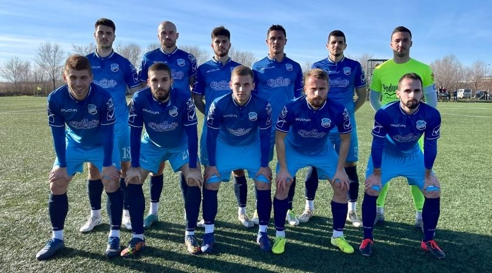

OFK Bačka iz Bačke Palanke osnovana je 1945. godine. Tokom svoje istorije klub je uglavnom igrao u nižim ligama Jugoslavije i Srbije, ali je najveći uspeh ostvario plasmanom u Superligu Srbije 2016. godine
Klub je poznat po radu sa mladim igračima i razvoju fudbala u Bačkoj Palanci. Stadion kluba nosi ime Slavka Maletina Vave, jednog od najvažnijih ljudi u istoriji kluba.
OFK Bačka je kroz godine imala mnogo uspona i padova, ali je ostala jedan od prepoznatljivih klubova u Vojvodini.
| Klub | Utakmice | Gol-razlika | Broj bodova |
| 1.Crvena Zvezda | 30 | 80:16 | 84 |
| 2. Radnicki Niš | 30 | 58:17 | 75 |
| 3. Partizan | 30 | 45:20 | 54 |
| 4. Čukaricki | 30 | 48:25 | 54 |
| 5. Mladost | 30 | 39:29 | 46 |
| 6. Napredak | 30 | 32:35 | 41 |
| 7. Vojvodina | 30 | 24:26 | 39 |
| 8. Proleter | 30 | 31:29 | 38 |
| 9. Spartak Subotica | 30 | 32:40 | 40 |
| 10. Radnik | 30 | 25:35 | 38 |
| 11. Voždovac | 30 | 28:37 | 37 |
| 12. Mačva | 30 | 16:26 | 32 |
| 13. OFK Bačka | 30 | 26:54 | 25 |
| 14. Rad | 30 | 16:39 | 21 |
| 15. Din. Vranje | 30 | 18:62 | 20 |
| 16. Zemun | 30 | 19:47 | 18 |
U ovoj sezoni ekipa OFK Bačke je pretrpela mnoge poraze, ali i uspehe. Najveća pobeda u ovoj sezoni bila je protiv Dinamo Vranja 15.3 2019 kada je rezultat bio 5:1, a najubedljiviji poraz 23. 2. 2019. protiv ekipe Mladosti iz Lučana rezultatom 5:0.
| Klub | Utakmice | Gol-razlika | Broj bodova |
| 1.Crvena Zvezda | 38 | 114:20 | 108 |
| 2. Partizan | 38 | 95:20 | 95 |
| 3. Čukaricki | 38 | 69:34 | 74 |
| 4. Vojvodina | 38 | 62:41 | 71 |
| 5. TSC Bačka Topola | 38 | 68:50 | 58 |
| 6. Radnik | 38 | 55:49 | 55 |
| 7. Mladost | 38 | 43:59 | 54 |
| 8. Proleter | 38 | 40:47 | 53 |
| 9. Spartak Subotica | 38 | 54:53 | 52 |
| 10. Metalac | 38 | 48:53 | 52 |
| 11. Napredak | 38 | 44:51 | 50 |
| 12. Radnicki Niš | 38 | 37:39 | 49 |
| 13. Novi Pazar | 38 | 50:60 | 49 |
| 14. Voždovac | 38 | 49:59 | 48 |
| 15. Rad | 38 | 44:57 | 48 |
| 16. Javor | 38 | 45:53 | 46 |
| 17. Inđija | 38 | 29:66 | 35 |
| 18. Zlatibor Čajetina | 38 | 28:64 | 29 |
| 19. Mačva | 38 | 26:81 | 25 |
| 20. OFK Bačka | 38 | 24:68 | 16 |
U ovoj sezoni ekipe OFK Bačke je zauzela poslednju (20.) poziciju, i vratila se u drugi rang takmičenja. Najveći poraz iz te godine je bio protiv ekipe Crvene Zvezde rezultatom 0:5, 14.5.2021. Najveća pobeda iz te sezone je protiv ekipe Metalca 2.12. 2020. rezultatom 3:1.

Gore: Ratković, Mitrović, Jovanović, Zdravković, Nedeljković, Milojević;
Dole: Eskić, Zličić, Svarups, Pantić, Mijatović.